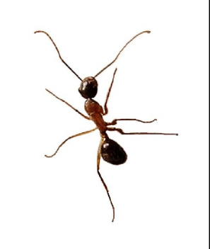
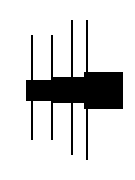
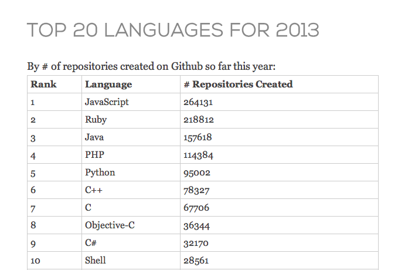

JavaScript
Luiz Tiago Oliveira
- CTO @ MGR Tecnologia
- Pós-graduado em Desenvolvimento Mobile @ CESAR
- Graduado em Sistemas para Internet @ Marista
- Co-fundador do jQuery Brasil & Pernambuco.JS
- Organizador do Pernambuco.JS / Front in Recife
Um pouco da história
- Foi criada inicialmente em 10 dias, em Maio de 1995 por Brendan Eich, quando trabalhava no Netscape
- Não tem absolutamente nada haver com Java
- Linguagem de programação interpretada
- Segundo a W3C, o nome foi uma jogada de marketing, pois o Java já se popularizava na época
Crise de identidade
- May 95: Mocha
- Sep 95: LiveScript
- Dec 95: JavaScript
- A mudança de nome de LiveScript para JavaScript coincidiu com a época em que a Netscape adicionou suporte à tecnologia Java em seu navegador (Applets).
Um pouco mais do passado
- Em março de 1996 a Netscape Communications Corporation lançou o Navegador Netscape 2.0, com suporte para JavaScript.
- Em agosto de 1995, a Microsoft desenvolveu uma linguagem semelhante, JSript, incluída no IE 3.0, em agosto de 1996.
- A Netscape submeteu as especificações do JavaScript para padronização pela Ecma International;
- E foi aí que a brincadeira começou, ECMAScript :)
JS servia pra quê?
- Validação de formulário
- Fazer as coisas se moverem na tela
- Efeitos que o FrontPage fazia e ninguém sabia como
- Efeitos usados no jQuery e em outras bibliotecas
Developer's Timeline
Tutorial como passar seu site para HTML5
- Substitua a primeira linha do seu HTML que deve ser esta:
- <!DOCTYPE html PUBLIC "-//W3C//DTD XHTML 1.0 Transitional//EN" "http://www.w3.org/TR/xhtml1/DTD/xhtml1-transitional.dtd">
- Por esta:
- <!DOCTYPE html>
- Pronto!
O que é HTML5 sem JavaScript?
- Novas tags semânticas
- ...?
- Varias APIs novas que são manipuladas com JavaScript
Mitos
- "JavaScript é inseguro, o código é acessível pelo cliente"
- "JavaScript é muito limitado, só trabalha dentro de uma sandbox (navegador)"
- "JavaScript só serve para Web"
- "Javascript definitivamente não presta em baixo nivel"
Node.JS
NodeOS
appjs
Phonegap
Firefox OS
noduino
tracking.js
FEED
- Alguém conhece o mascote?

Tentativas
Design

IE


Ant v0.1
Ambient Light Events
- Link do Draft
Atualizado em 29 de Maio de 2013 - Detecta mudanças na iluminação do ambiente
- Atualmente só o Firefox 22+ está dando suporte
Ambient Light Events
window.addEventListener('devicelight', function(event) {
console.log(event.value);
// Retorna um inteiro de 0 a 10000 (lux)
});
Ant + Ambient Light Event
"Fear Ant"
Github Top Languages

Como prever o futuro?
- Ler muito
- Participar dos bons grupos e discussões
- Ou virar Mãe Dinah
Como se manter atualizado?
- Pernambuco.JS
- Eventos BrazilJS / *.JS / FrontIn's
- Grupos Facebook
['Javascript Brasil', 'FrontEnd Brasil', 'HTML5 Brasil', '...'] - Weekly's
['BrazilJS', 'HTML5', 'Javascript', 'CSS3', '...']